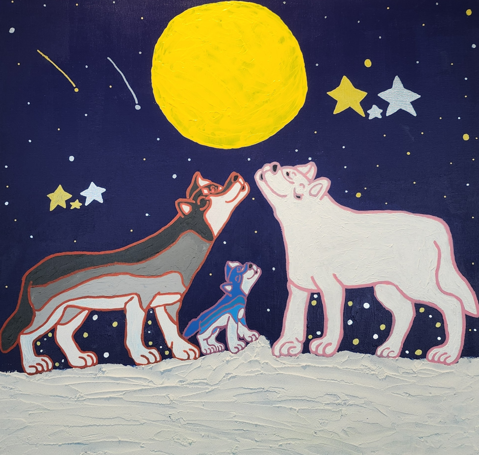

The Flatland Dream — 2025 Exhibition Recap

1. What is the artist’s favorite food?
Sun: Hamburgers. I like them because they’re made by my dad.
Mother: He really loves his dad, so he likes anything his dad makes. Recently, his dad opened a handmade burger restaurant. Almost every day, Sun texts his dad to place an order, and when his dad comes home from work, he brings it back for him. I think he chose hamburgers because of this situation and his good relationship with his dad.
2. What is a memorable place the artist has traveled to or visited?
Sun: Daegwallyeong. It was nice because it’s a good place to relax.
Mother: We all prefer travel destinations with a quiet natural environment. Since he was young, we often took him to natural recreation forests, the woods in Jirisan, and traditional heated rooms in the forests of Gangwon-do. I think his tastes grew to resemble ours. When I asked him why he liked Daegwallyeong, he said it was because he liked being warmed up and cozy.
3. Which season does the artist like the most?
Sun: Summer. I like it because the sun shines brightly.
Mother: He likes snorkeling. In the summer, he can enjoy swimming and snorkeling in the sea, so I think that’s why he likes it. This summer vacation was too short, and Sun had a lot on his schedule, so we couldn’t go yet. Reading this answer makes me feel we should hurry and go before the hot weather is gone.
4. What activities or hobbies does the artist enjoy in his free time?
Sun: Drawing, watching movies, listening to music, and playing Nintendo games (Zelda).
Mother: He draws whenever he has time. He always carries a pencil and paper, plays music on his phone, and keeps drawing what he loves. Other than that, he enjoys watching “Legend of Zelda” gameplay videos on YouTube or playing the game himself.
5. What way of working is the most fun and interesting when making artwork?
Sun: Coloring with my fingers. I like the soft texture.
Mother: He enjoys painting with his fingers. He likes the feeling of squeezing paint onto his fingers or directly onto the canvas and smearing it, and he also enjoys the expressions that come out when he rubs with his fingers. He always plays his favorite music while drawing, and with his palms covered in paint, he sometimes dances and even sings while making art.
6. How did the artist feel when he saw the collaborative artwork?
Sun: Proud and happy.
Mother: It was a shame that we couldn’t go to the exhibition in person. We showed him photos and videos and talked about it together. When I explained that the artworks were inspired by his drawings and that the audience responded positively, he said, “Wow!” with excitement. (laughs)
7. What kind of drawings does the artist want to make in the future?
Sun: I want to keep drawing landscapes and family pictures.
Mother: He draws a wide range of subjects. Although his work is often warm, comforting, and lovely, he also enjoys drawing playful and mischievous pictures. Since he’s still young, what he wants to draw changes every day. The themes or subjects may change, but I believe the warmth and joy within him will always be reflected in his art.
Supporting Sun so that he can maintain his unique artistic colors and enjoy his work freely is more difficult than expected, but we’ll continue to watch closely and help him so that wherever his works are shown, people can immediately recognize them as Sun’s.

1. 작가가 특별히 좋아하는 음식은 어떤건가요?
이해: 햄버거. 아빠가 만들어주는 음식이라서 좋아요.
이해엄마: 아빠를 워낙 좋아하는 아이라 아빠가 하는건 뭐든 좋아해요. 최근 아빠가 수제버거 가게을 오픈해서 거의 매일 해가 문자로 아빠에게 주문을 넣고 퇴근할때 아빠가 포장해서 집으로 배달해오고 있어요. 아마도 그런 상황과 관계가 좋아서 햄버거로 꼽은것 같아요.
2. 여행했던 곳이나 방문했던 장소 중 기억에 남는곳은 어디일까요?
이해: 대관령. 편히쉬기 좋아서 좋았어요.
이해엄마: 저희는 모두 조용한 자연환경이 있는 여행지를 선호하는 편이예요. 어릴때부터 자연휴양림이나 지리산 숲속, 강원도 숲속 구들방이 있는곳 등 을 데리고 다니다보니 해 취향도 닮아갔나봐요. 이유를 물어보니 뜨끈하게 지지기 좋아서 그렇다고 이야기 하네요.
3. 작가는 어떤 계절을 가장 좋아하나요?
이해: 여름. 햇볕이 쨍쨍해서 좋아요.
이해엄마: 해가 스노우쿨링을 좋아해요. 여름엔 바다에서 물놀이도 하고 스노우쿨링도 마음껏 할수있어서 좋아하는것 같아요. 올 여름은 방학도 너무 짧았지만 해 스케줄이 유독 많았어서 아직 못갔네요. 저 답변을 보니 더위가 가기전에 서둘러 떠나봐야겠어요.
4. 빈 시간 즐겨하는 활동이나 취미가 있다면 소개해주세요.
이해: 그림그리기, 영화보기, 음악듣기, 닌텐도게임(젤다) 좋아해요.
이해엄마: 해는 시간이 될때마다 그려요. 연필과 종이를 늘 들고 다니면서 핸드폰으로 음악을 틀어놓고 좋아하는 무언가를 계속해서 그려요. 그외에는 유튜브로 젤다의전설 게임하는 영상을 보거나 스스로 게임을 해요.
5. 작품을 작업할때 어떤 방식의 작업이 제일 재미있고 흥미가 있나요?
이해: 손가락으로 채색하기. 부드러운 감촉의 느낌이 좋아요.
이해엄마: 해는 손가락으로 채색하는걸 즐겨요. 물감을 손가락에 짜거나 캔버스에 직접 짜서 문지르는 감촉도 좋아하고 손가락으로 문질러 표현했을때 나타나는 표현법도 좋아해요. 그림을 그릴때는 늘 좋아하는 음악을 틀어놓고 그리는데 손바닥에 잔득 물감을 뭍힌상태로 춤추다가 노래도 부르면서 그림을 그려요.
6. 협업한 작품을 보았을때 어떤 느낌이나 감정이 들었나요?
이해: 뿌듯하고 기뻤어요.
이해엄마: 현장을 직접가서 즐기지 못해서 아쉬웠어요. 사진이나 영상을 해에게 보여주며 함께 이야기 했는데 해그림을 보고 영감을 받아 그린 그림들이고 현장 반응이 좋았다 라고 설명하니 해가 "와우!"라고 표현했어요. 하하…
7. 앞으로 어떤 그림을 그리고 싶나요?
이해: 풍경과 가족 그림을 계속 그리고 싶어요.
이해엄마: 해는 그리는 소재가 다양한 편이예요. 따뜻하고 편안하고 사랑스러운 그림들 위주로 소개되고 있지만 장난스럽고 개구장이 같은 그림들을 그리는것도 좋아한답니다. 아직 어리기때문에 그리고 싶은것들도 매일 달라지는것 같아요. 작품의 소재나 주제는 달라질수 있지만 이해 안에 있는 따뜻함과 즐거움은 작품안에 계속 녹아있을꺼라 생각되요.
해의 그림색을 지켜주고 스스로 즐기면서 작품활동을 할수 있도록 중심을 잡고 돕는것이 생각보다 어렵지만 어디에서 만나더라도 이해작가의 작품이다! 라고 알아볼수있도록 이해만의 색을 지켜가며 작품활동을 할수있도록 옆을 잘 지켜보겠습니다.
